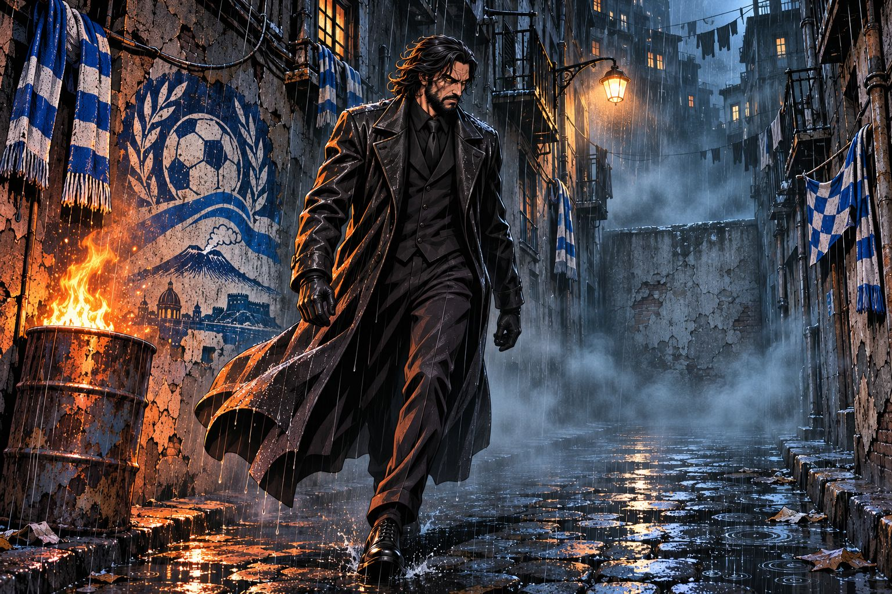
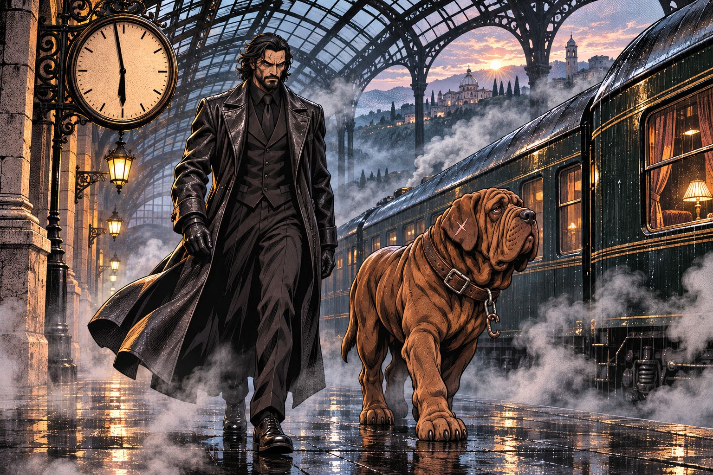
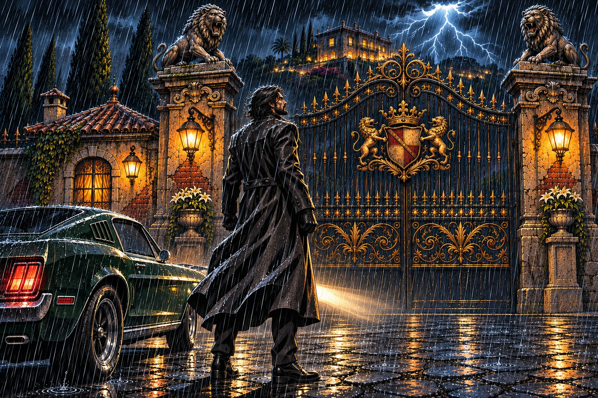

The trail
One night. Every man who took her.
-

NaplesEvery man who touched her.
A napkin in a dead man's pocket. A pizzeria that never closes. An alley he hasn't walked since he was a boy. Somebody always talks.
-

SouthHe doesn't buy tickets.
The trail runs out of Naples and down through the dark, with an unlikely friend at his side and her scent still in the air.
-

SicilyWhere it started.
Somewhere behind those gates, the old man pours himself a glass. He thinks he has time.